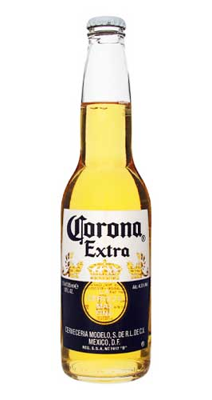

Колір, який Ви не переплутаєте з жодним іншим. Єдиний у своєму роді смак. Неповторний аромат, який немов шепоче Вам: прийшов час розслабитися. Усе, чого Ви хотіли б від пива — в одній із найвідоміших пляшок у світі. Коли ви п'єте Corona Extra, є щось таке, чого не буде з жодним іншим пивом. Може бути, справа в особливому настрої, який воно створює. Або легкості розмов між друзями за пляшкою Corona.